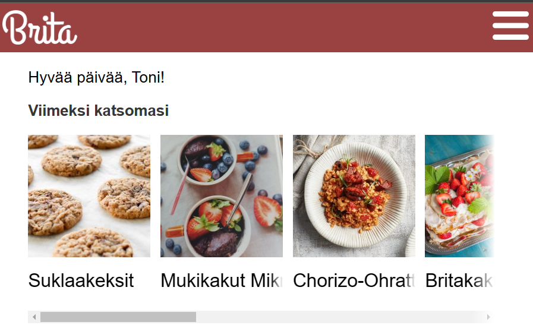

Toni Luomala
Portfolio

Mikä on Ticorporate?
Ticorporate on JAMK:in tietojenkäsittely- tutkinto-ohjelmaan kuuluva n. 4kk:n mittainen projektinhallintaa käsittelevä kurssi, jonka aikana oppilaat kehittävät 4-5 hengen tiimeissä sovelluksen tai pelin, riippuen siitä, kuuluuko opiskelija peli vai sovelluspuolen tutkintoon. Kuulun sovelluspuolelle, joten tiimimme kehitti sovelluksen.
Lähtötilanne Frontend TestausBrita
 Sovelluksen etusivuKehittämämme sovellus on Brita -nimeä käyttävä pwa-reseptisovellus. Sovellus saatiin valmiiksi joulukuussa 2022 ja sitä on mahdollista koekäyttää niin kauan kuin AWS-palvelumme ovat toiminnassa. Sovellusta voi käyttää selaimessa niin puhelimella, kuin tietokoneellakin.
Sovellusta voi kokeilla osoitteesta: https://master.ddudu42yaerab.amplifyapp.com/ Huom! Sivut ovat toiminnassa vain väliaikaisesti, joten jos ne eivät toimi, niin todennäköisesti se tarkoittaa sitä, että AWS-palvelumme eivät ole enää toiminnassa.
Lähtötilanne
Ticorporaten alkaessa itseäni kiinnosti frontend, testaus, tietokannat ja ui/ux suunnittelu. Lähtötilanne omien taitojen osalta oli seuraavanlainen:
Frontendista oli kokemusta jo Sveltestä ja frontendin toteuttaminen kiiinnosti itseäni edelleen. UI/UX toteutus/suunnittelukin kiinnostaa, mutta en koe olevani kovin luova siinä tehtävässä. Ensimmäisen vuoden suoritin Vaasan Ammattikorkeakoulussa, joten ensimmäisen vuoden opintoni poikkesivat JAMK:in vastaavista. Koulun vaihdosta johtuen toisen vuoden kurssit olivat sekoitus ensimmäisen ja toisen vuoden pakollisia kursseja, eikä vapaasti valittaville ja täydentäville jäänyt paljoa tilaa. Ainoa ohjelmointi kursssi toisena vuotena oli Frontendin perusteet. Tavoitteekseni asetin itselle oppia koodaamaan paremmmin, lisää testauksesta sekä myös ryhmätyötaitoja.
Roolit Ticorporatessa
Meidän ryhmäämme kuului aluksi 5 henkilöä, mutta yksi jäi pois matkasta aivan alkuvaiheessa. Tämä aiheutti osaltaan ongelmia roolien valintaan. Rooleja oli enemmän kuin oli halukkaita niitä ottamaan. Omalta osaltani tämä meni sitten niin, että alussa roolini olivat testaus ja frontend, sitten frontend ja markkinointi, sitten pelkkä frontend. Lopullinen vaihto tapahtui projektin kolmannella viikolla, eli lopulta palattiin alkupisteeseen ja roolini olivat taas testaus ja frontend. Tämä muutos oli siis lopullinen ja siinä pysyttiin koko loppuprojektin ajan. Näin jälkeenpäin ajateltuna voin olla ihan tyytyväinen ratkaisuun. Vaikka testaus oli sivurooli, niin todellisuudessa käytin siihen kuitenkin hieman enemmän kuin 20% työajasta.
Tekniikka (Frontend)
Ryhmämme päätyi valitsemaan frontend frameworkiksi Reactin, josta itselläni ei ollut siitä mitään aiempaa kokemusta, joten aloitin projekin opettelemalla Reactia Full Stack Open -kurssin tehtäviä suorittamalla. Tähän käytin aikaa 2 viikkoa. Tein lähes kaikki "spiket" jotka minulle oli määritelty zenhubiin, vain pari aivan viimeistä tehtävää jäi kesken. Opin kurssista kyllä Reactia, mutta 2 viikkoa oli hieman liian lyhyt aika itselleni opetella uusi framework. Pidempää aikaa ei tähän ollut projektia silmällä pitäen järkeä käyttää, joten aloitin aloin osallistumaan frontendin koodaamiseen lokakuun loppupuolella. Ensimmäisiä sovelluksen osia, joiden tekemiseen osallistuin olivat sovelluksen kirjautumis -ja rekisteröintisivut. Kirjautumissivun luontiin löytyi varsin selkeä tutoriaali, jossa näytettiin kuinka luodaan User Pool AWS Cognitossa ja kuinka se saadaan toimivaksi Reactin kirjautumissivulla. Kopioin UserPoolId:n ja ClientId:n sovelluksemme AWS:n sivuilta Cognito palvelusta. Alla kuvia UserLoginPage -komponentista.
 Sovellukseen kirjautuminen tapahtuu AWS:n Cognito -palvelun kautta.
Sovellukseen kirjautuminen tapahtuu AWS:n Cognito -palvelun kautta.

Listan lisäys komponenttia tein yhdessä ryhmän toisen frontend -koodarin kanssa, osan siitä parikoodauksena niin että olin itse koneella ja toinen neuvoi ja kommentoi samalla. Tällä tavoin en ollut työskennellyt koskaan aiemmin. Homma toimi suht ok pientä sekoilua lukuunottamatta. Ongelma oli ehkä siinä, että osaamistasossa oli melko suuri ero, eli toiselle koodarille React oli paljon paremmin hallussa ja en toisekseen ollut tottunut työskentelemään tällä tavoin, joten se tuntui hieman oudolta. Kyseisessä komponentissa on painike, josta avautuu valikko jolla voi lisätä uuden listan itselle. Itselle täysin uutta asiaa oli mm. backendiin tehtävät pyynnöt axiosin avulla. Lisätty lista näkyy sivulla ja listaa klikkaamalla pääsee katsomaan listan sisältämiä reseptejä.
Omat listat -sivu valmiissa sovelluksessa OwnLists.js -komponentin koodia.
OwnLists.js -komponentin koodia.
 Komponentin otsikko, painike ja importoitu ListModal.js komponentti.
Komponentin otsikko, painike ja importoitu ListModal.js komponentti.
Testaus
Sovellusta testasimme manuaalilla testeillä, jotka oli määritelty zenhubin taskeihin, eli aina kun toiminnallisuus saatiin valmiiksi, se siirrettiin testaus osioon ja kuitattiin valmiiksi vasta kun se oli testattu toimivaksi. Tätä manuaalista testausta suorittivat kaikki tiimissämme, mutta tulimme huomaamaan projektin edetessä, että zenhubin testaus osio paisui viikko viikolta. Meillä olisi ollut tarvetta siis testata enemmän, mutta meillä ei ollut riittävästi aikaa. Itse pyrin pääsäntöisesti testaamaan valmistuneita ominaisuuksia noin kerran viikossa. Testaamisesta aiempaa kokemusta oli kertynyt vain toisen vuoden testaus kurssilta. Cypressia käytettiin kyseisellä kurssilla end to end testien tekemiseen. Paljon ei ollut enää muistissa cypressin toiminnasta, eli aika nollilta joutui aloittaa sen kanssa. Käytin testien tekemiseen yleensä omaa testausbranchia. Projektin aikana sain valmiiksi muutaman end to end testin. Vaikka testejä ei sinällään käytetty sovelluksen kehittämiseen, koska testien avulla ei löytynyt uusia bugeja, niin tällaisten testien kirjoittaminen tulisi olemaan hyödyllistä jos projektia vietäisiin pidemmälle esim. julkaistavaksi asti. Tämä siitä syystä, että kukaan ei jaksa tehdä tällaisia testejä manuaalisesti päivittäin eikä esim. yrityksissä resurssit siihen välttämättä riittäisi. Automaattisia testejä voitaisiin ajastaa käynnistymään päivittäin jolloin saataisiin aina suoraan tieto jos testi epäonnistuu. Testien kirjoittamisessa tuli vastaan yksi isompi ongelma: Cypress testi ei normaalisti tallenna selaimen local storagen kirjautumistietoja, jolloin testin tekeminen kirjautuneena ei onnistu. Suurin osa sovelluksen toiminnallisuuksista vaati sisään kirjautumisen ja sen takia kirjautuminen sisällytettiin useampaan testiin. Ongelmaa yritimme korjata tallentamalla kirjautumistiedot "snapshottiin" siinä kuitenkaan onnistumatta. Sain ongelman kierrettyä kirjoittamalla monta eri vaihetta yhden testin sisälle kirjautumisen jälkeen. Tämä toimi siitä syystä, että tieto kirjautumisesta nollaantuvat vain eri testien välillä. Tiesin kuitenkin, että tämä ei olisi oikea tapa kirjoittaa testejä, joten perehdyin ongelmaan vielä myöhemmin. Ongelmaan löytyi ratkaisu funktioiden avulla, jotka palauttavat ja tallentavat kirjautumistiedot jokaisessa testissä.
 Ongelmaan löytyi ratkaisu funktioiden avulla, jotka palauttavat ja
tallentavat kirjautumistiedot jokaisessa testissä.
Ongelmaan löytyi ratkaisu funktioiden avulla, jotka palauttavat ja
tallentavat kirjautumistiedot jokaisessa testissä.
 Reseptin lisäys End to End -testi Cypressillä
Reseptin lisäys End to End -testi Cypressillä
 Yksikkötesti Jestillä, jossa testataan Loading komponentin renderöimää
tekstiä
Yksikkötesti Jestillä, jossa testataan Loading komponentin renderöimää
tekstiä
Mitä opin tästä kaikesta?
Projektissa työskenteleminen oli välillä haasteellista, johtuen pitkälti siitä, että uusien asioiden opetteluun ja ongelmien selvittämiseen kului kohtuullisen paljon aikaa. Projektiin olisi ollut helpompi lähteä mukaan jos käyttämämme tekniikat olisivat olleet itselle ennestään tuttuja. Sain kuitenkin samalla mahdollisuuden oppia uutta ja voin olla tyytyväinen että sain roolit tekniikasta ja testauksesta, koska samat asiat kiinnostavat edelleen myös projektin jälkeen. Ottaen huomioon, että React oli täysin uusi tekniikka itselle olen kyllä oppinut Reactia, mutta huippu osaaja en missään nimessä vielä siinä ole, jotta voisin kehittyä paremmaksi, tarvitsen lisää opiskelua JavaScriptin ja Reactin parissa. Testauksesta opin käyttämään cypressia paremmin, sekä hieman postmanin käyttöä backendin testauksessa. Yksikkötestien kirjoittaminen jäi vähiiin koska aloitin sen vasta projektin loppuvaiheessa ja vastaan tuli teknisiä ongelmia. Tarkoituksena oli kuitenkin kirjoittaa yksikkötestejä jossain vaiheessa projektia. Jokaisena päivänä tein, tai ainakin yritin tehdä jotain projektimme eteen. Olisin toivonut saavani frontendissa vähän enemmän itsenäisesti aikaiseksi, mutta tilanne oli siinä mielessä vähän hankala kun tekniikat olivat itselle uusia. Projektin aikana selkeni kuitenkin ajatus siitä miten tärkeää tiedonhakutaito on tällaisessa työssä. Toisekseen koodaamisen osalta tajusin paremmin miten tärkeää console loggaaminen on, vaikka sen kyllä tiedostin jo aiemminkin, niin kurssin aikana sen tärkeys erityisesti korostui. Kommunikointitaitoja ei voi kyllin korostaa. Kommunikointi ei tiimissämme varmasti ollut täydellistä, mutta onnistui kuitenkin sen verran hyvin, että saimme asiat yleensä hoidettua keskenään. Sain myös työtehtävieni kautta mahdollisia ideoita opinnäytetyön aiheeksi.
Mitä tulevaisuudessa?
Tällä hetkellä suunnitelmissa olisi hakea työtehtäviä todennäköisimmin testaajana eli sain kurssista vahvistusta sille minkälaisiin työtehtäviin aion hakeautua. Jatkossa on tarkoitus opiskella backend sovelluskehitystä ja syventää osaamista frontendin parissa käymällä full stack open kurssia perusteellisemmin kuin se oli mahdollista ticorporaten aikana. Ticorporate oli enimmäkseen miellyttävä kurssi jonka aikana sai kokemusta asioista, joita ei ole ollut mahdollista muilla kursseilla saada.